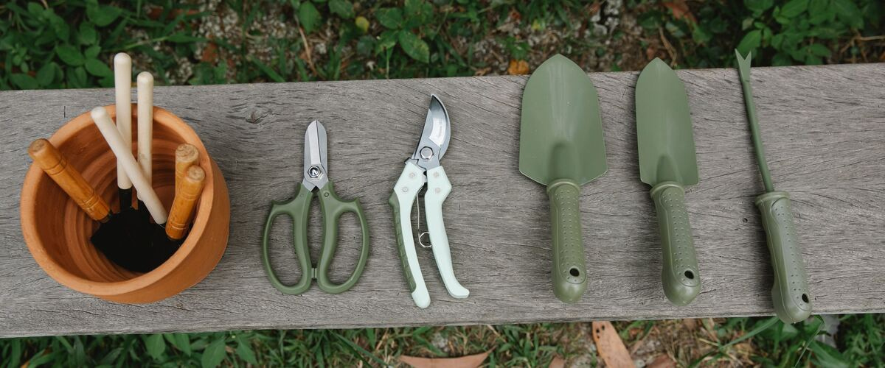
32 guides · Oregon · Washington · Idaho
Guides for Northwest gardeners
Advice for what makes gardening here different: cool summers, wet winters, short seasons and slugs.
Plant guides
How to grow specific vegetables, fruit and flowers here.
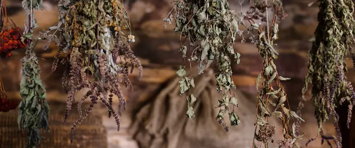
Harvesting, Drying and Freezing Kitchen Herbs Cutting basil, parsley and thyme so they keep regrowing, and whether drying or freezing works better for each one.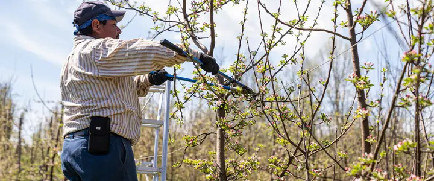
Winter Pruning for Apple and Pear Trees Apples and pears are pruned while dormant in late winter; cherries and plums aren't. Which cuts to make and how much to remove.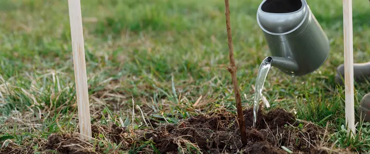
How to Plant Bare-Root Fruit Trees in the Northwest Bare-root trees arrive in late winter with no soil on the roots. Keeping them alive until planting day and setting the graft at the right height.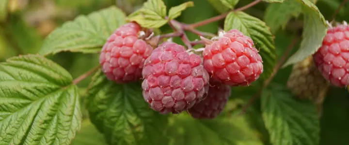
Growing Raspberries in the Northwest Raspberry canes drown in soggy winter soil. Choosing summer- or fall-bearing types, planting on a raised row, and which canes to cut.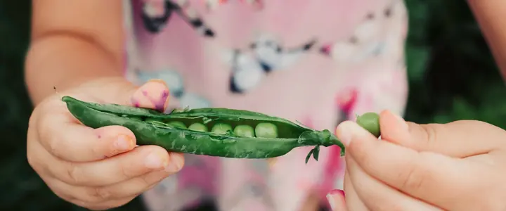
Growing Peas in Oregon, Washington and Idaho Peas go in as soon as the soil can be worked and quit in summer heat. Sowing dates by region, snap vs. shelling, and trellising.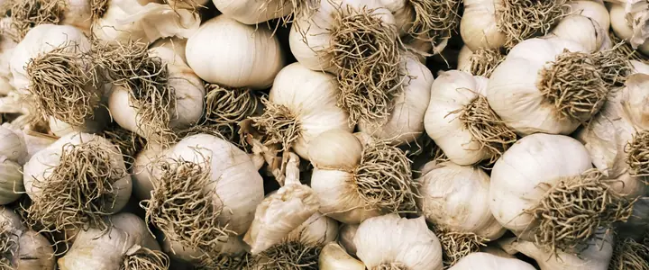
When and How to Plant Garlic in Oregon, Washington and Idaho Garlic goes in around October and comes out the next July. Planting dates by region, hardneck or softneck, and curing the harvest.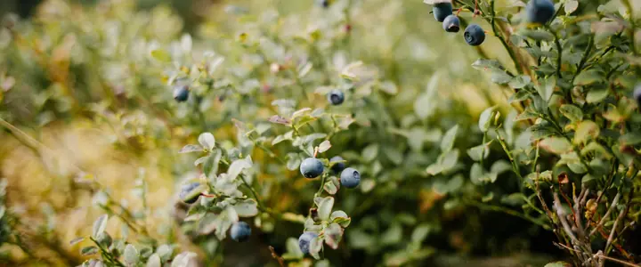
Growing Blueberries in the Pacific Northwest Acidic, rainy west-side soil is close to what blueberries want. Choosing two varieties that pollinate each other, planting, and pruning.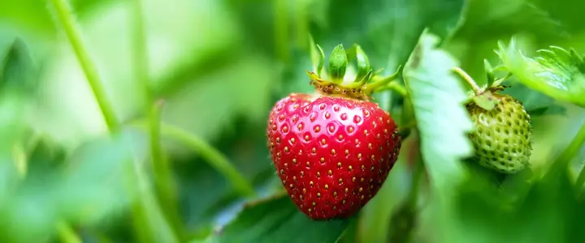
Growing Strawberries in the Pacific Northwest June-bearers give one big crop, everbearers a trickle all summer. Planting, mulching against rot, and renewing an old patch.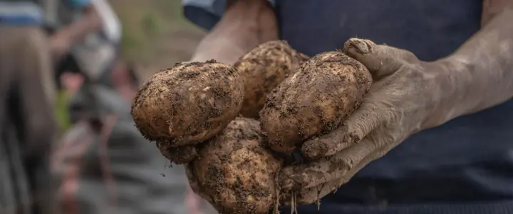
Growing Potatoes in Oregon, Washington and Idaho Seed potatoes, cutting and curing them, hilling, and digging both new potatoes and keepers in Oregon, Washington and Idaho.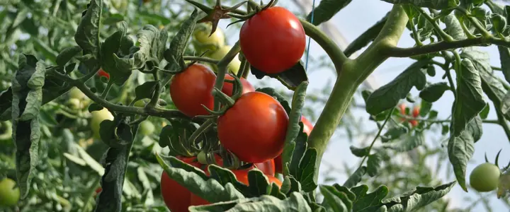
The Best Tomatoes for Cool Northwest Summers Big slicers often stay green in a cool Northwest summer. These are the tomatoes that do ripen in Portland, Seattle and on the coast.
Timing and seasons
Frost dates, soil temperature, seed starting and planning the year.
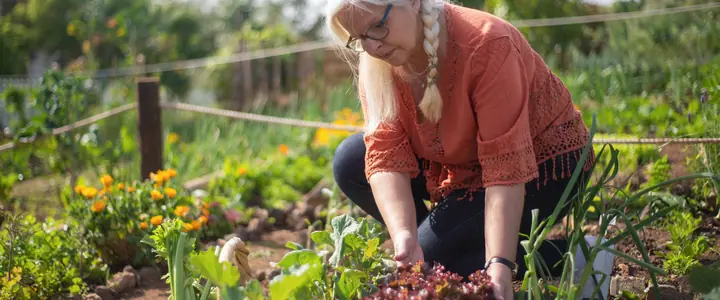
How the Seasons Change What You Grow in the Northwest From pea sowing in March to garlic in October: what a year in a Northwest vegetable garden looks like, season by season.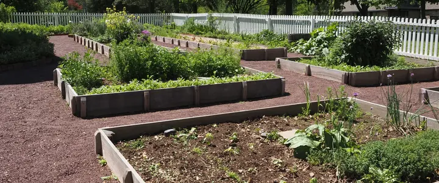
Crop Rotation for a Small Northwest Vegetable Garden Moving tomatoes, potatoes and cabbage-family crops to a new bed each year cuts down on soil diseases. A simple plan for three or four beds.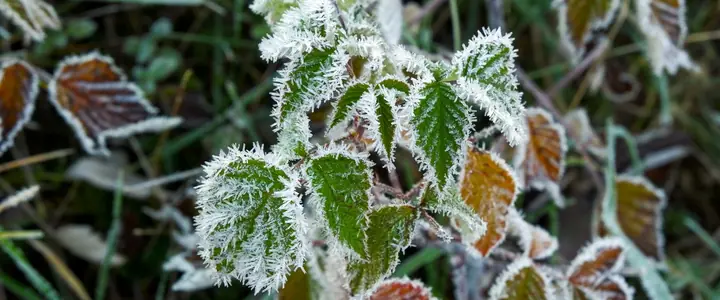
What Your Last Frost Date Really Means A 'last frost date' is an average, and in half of years frost comes later. What the number means and how much margin to give tomatoes.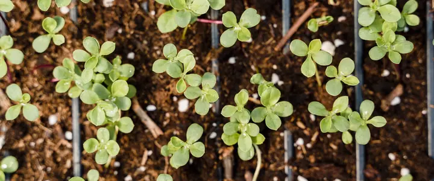
How to Harden Off Seedlings Before Planting Out Indoor seedlings scorch or stall if they go straight outside. A day-by-day routine for getting them used to sun, wind and cold nights.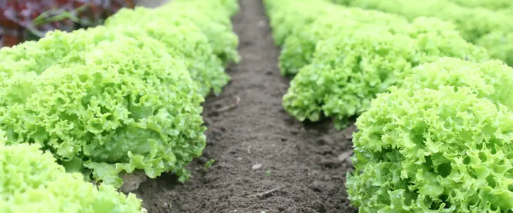
Succession Planting: Steady Harvests Instead of All at Once Small sowings of lettuce, beans and carrots every few weeks, and a fall crop after the spring one, keep a small bed producing longer.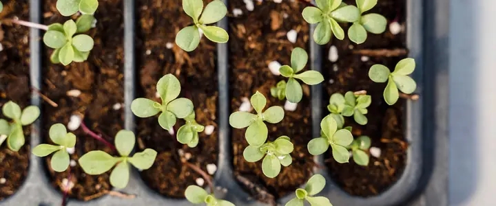
Starting Vegetable Seeds Indoors: A Northwest Timeline Onions in late winter, peppers next, tomatoes last. A Northwest seed-starting timeline and the light setup that keeps seedlings stocky.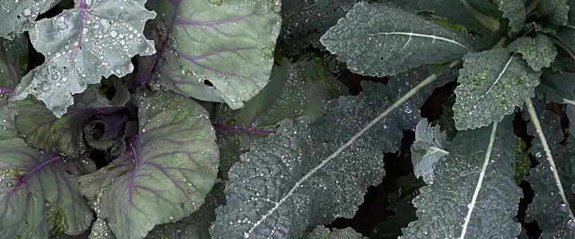
Fall and Winter Vegetable Gardening West of the Cascades West of the Cascades, kale, leeks and carrots keep going through most winters. The catch is planting them in July and August.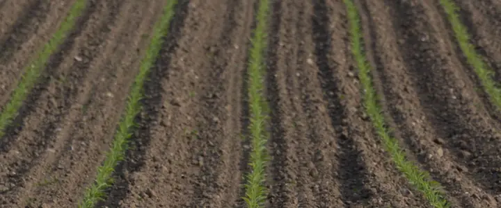
Gardening in Bend and Central Oregon's Short Season Bend and Redmond can see frost in June and again in September. What still grows well there, and how gardeners stretch the season.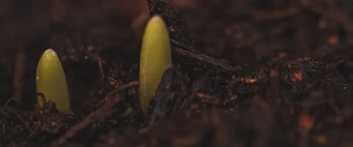
Why Northwest Gardeners Should Plant by Soil Temperature Beans and squash rot in cold soil even after the last frost. A cheap soil thermometer settles when it's warm enough to plant.
Beds, soil and water
Raised beds, containers, soil care and summer watering.
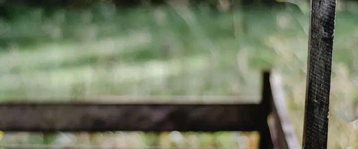
Making Compost in a Rainy Northwest Garden West-side piles get soaked in winter and east-side piles dry out in summer. Bins, the green-brown mix, and fixing a slimy or stalled pile.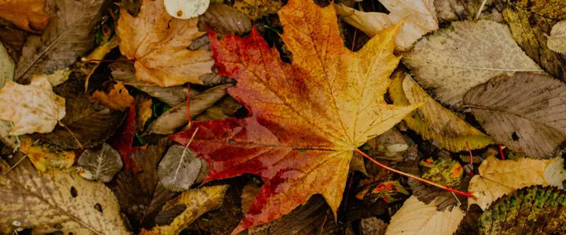
Turning Fall Leaves into Leaf Mold and Mulch Fall leaves left in a pile for a year turn into crumbly leaf mold. Which leaves break down best and where to use it.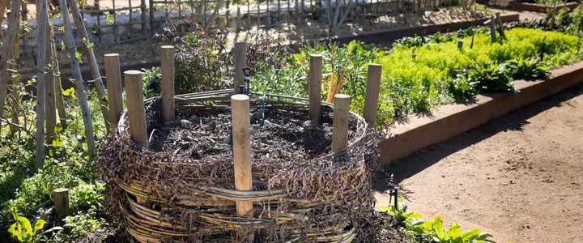
Putting the Vegetable Garden to Bed for a Northwest Winter What to pull, what to leave standing for birds and insects, and how to cover soil before winter rain or a hard eastern freeze.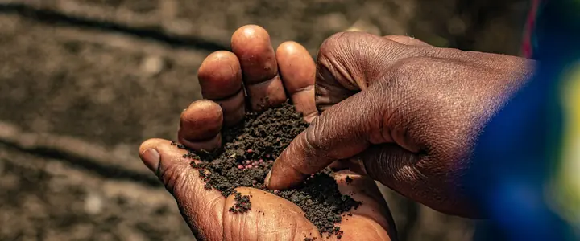
Soil pH in the Northwest: Testing, Lime and When to Leave It Alone Rain-washed west-side soils run acidic and east-side soils alkaline. Testing your pH and when lime or sulfur is worth adding.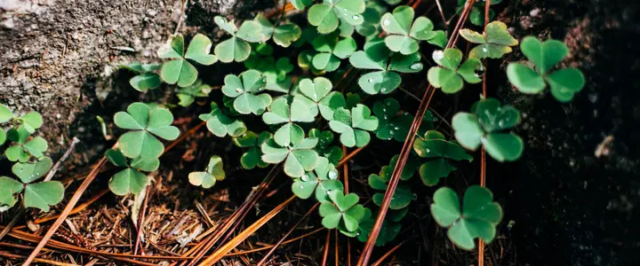
Winter Cover Crops for Northwest Vegetable Beds Crimson clover, fava beans or cereal rye sown in early fall hold bare soil through the winter rain and feed it by spring.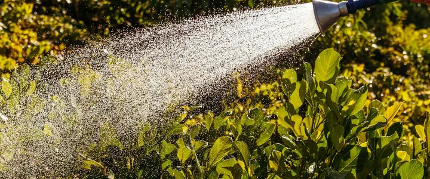
How Much to Water Vegetables in a Dry Northwest Summer Northwest summers are close to rainless from July to September. How much vegetables need each week, and drip, soaker hose or hand watering.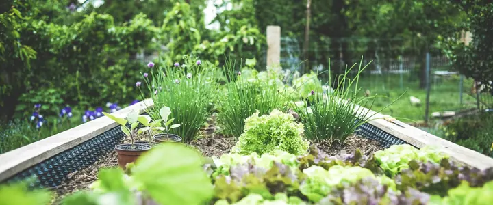
Raised Beds for Rainy Northwest Gardens Raised beds drain after winter rain and warm up sooner in spring. Sizes, depth, what to fill them with, and lumber choices.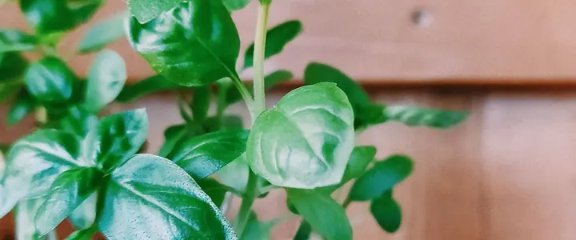
Growing Vegetables in Containers on a Northwest Balcony or Patio A balcony is enough for herbs, greens and cherry tomatoes. Pot sizes, potting mix and the summer watering that pots need.
Pests and diseases
Slugs, blight and the other troubles of a wet climate.
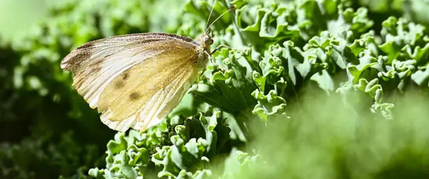
Cabbage Worms and Aphids on Kale, Broccoli and Cabbage Green caterpillars chew holes, gray aphids cluster under leaves. Row cover, hand-picking and other low-spray ways to protect kale and broccoli.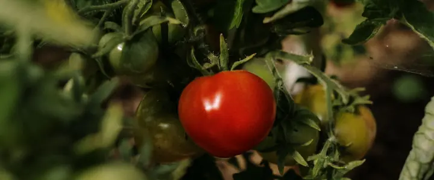
Late Blight on Tomatoes: How to Spot It and Keep It Away Late blight arrives with cool, wet late-summer weather and can kill tomatoes in a week. Spotting it early and keeping it out of next year's garden.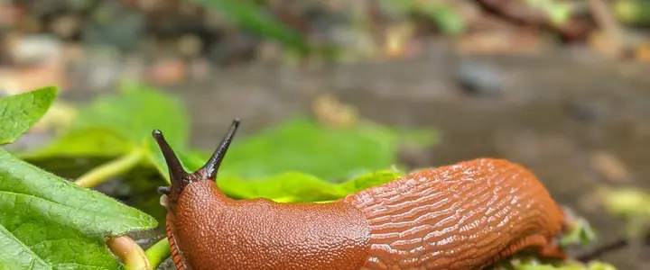
How to Control Slugs in a Northwest Garden Gray garden slugs do most of the damage in Northwest beds. When they hatch, how to tell their damage apart, and which controls are pet-safe.
Flowers and pollinators
Cut flowers and plantings for bees and butterflies.
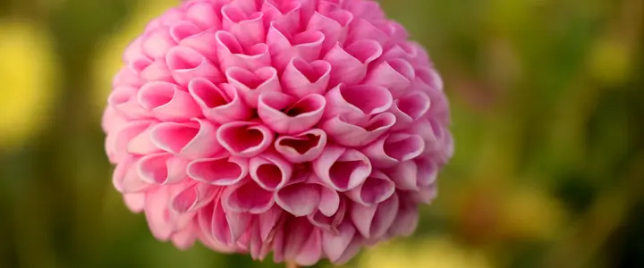
Growing Dahlias in the Northwest Dahlia tubers rot in cold, wet soil, so timing matters more than anything. Planting, staking, and digging or mulching in winter.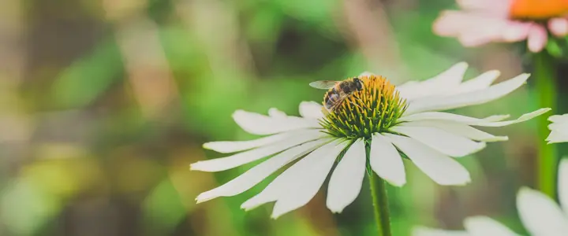
Native Plants for a Northwest Pollinator Garden Red-flowering currant in March, asters in October: Northwest natives that keep bees and hummingbirds fed from late winter to fall.